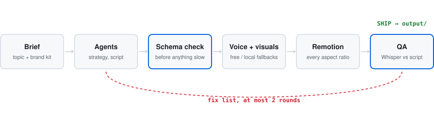
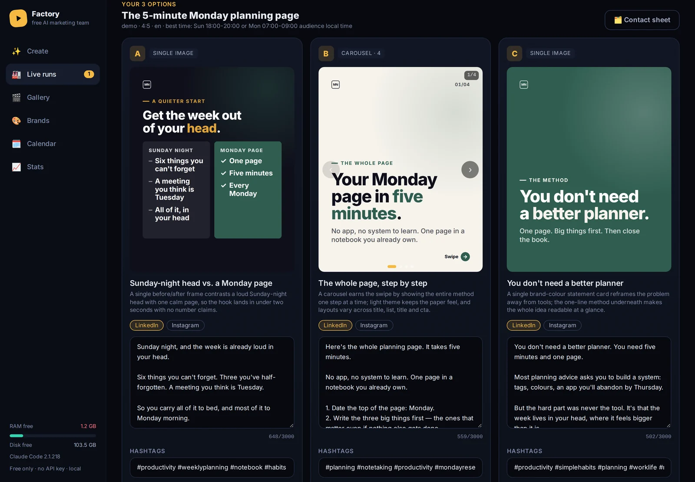
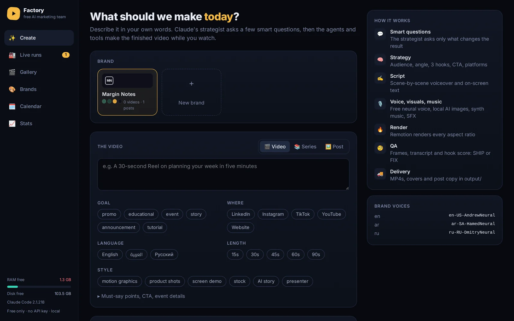
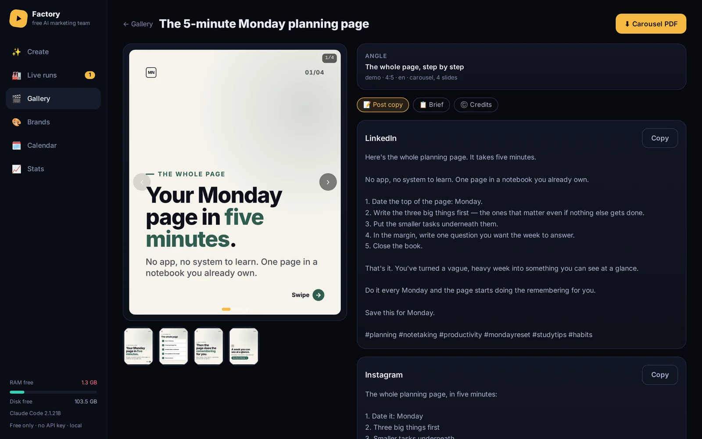

The idea
I wanted short videos that stay on brand, cost nothing per video, and still get made when an online AI service is down or out of quota.
How it works
Claude makes the decisions. Python scripts do the work.
- A strategist agent picks the audience, angle, hook and call to action.
- A scriptwriter agent writes the storyboard: voiceover, on-screen text and scene types.
- The storyboard is checked against a JSON schema before anything slow runs.
- Python tools make the voice, fetch or generate the visuals and pick music.
- Remotion, a React video framework, renders every aspect ratio.
- QA checks length, audio levels and black frames, and transcribes the voice with Whisper to compare it with the script.
- A reviewer agent reads the QA report and returns SHIP or a fix list. At most two fix rounds.
The same pipeline makes image posts and carousels. Videos come out in English, Arabic or Russian. Arabic captions run right to left.

Three options, you pick one
For an image post, the app makes three different angles, each with its own design and its own copy for LinkedIn and Instagram. You pick one, edit the text if you want, and it delivers the slides, a carousel PDF and the post copy.



A finished video, made by the app
One brief for a fictional notebook brand. The agents wrote the script, the voice is a free neural voice, Remotion rendered it, and the QA step passed it. No human edits.
The same run also delivered a 4:5 version for the LinkedIn and Instagram feeds.
Constraints I set
- No paid APIs. Every AI step has a free online option and a local fallback: Piper voices, local Stable Diffusion, a built-in mascot instead of a talking head.
- Runs on a normal laptop. On mine, a 26-second preview renders in about 50 seconds. A local AI image takes about 9 minutes on the CPU, so online options come first.
- Nothing ships unchecked. The schema check and the QA step can stop a run.
The web app
A FastAPI backend runs Claude Code in headless mode, and a React + TypeScript front end streams each agent and tool live as it works. It runs in Docker, with tests and GitHub Actions CI.
Security
The app runs an AI agent on a server, so it is locked down by default:
- The agent can only use an allowlist of tools: the project's own scripts, ffmpeg and a few read-only commands. Other integrations are blocked.
- Every uploaded file must sit inside the uploads folder. Tests try
/etc/passwd,../../etc/passwdand.env. - The public mode sits behind HTTPS and a per-person login with hashed passwords, plus security headers and an upload size limit.
- The container runs as its own user, not root. Keys live in
.env, outside git.
What's next
I haven't measured the Claude cost per video yet. The web app already records the tokens each job uses, so the next step is to turn that into a cost per video.